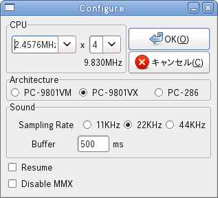

CPU スピードのベースクロックを指定します。
1.9968MHz で 4/8MHz系、2.4576MHz で 5/10MHz 系になります。
実際の CPU スピードはこの値に倍率を掛けた物になります。
※設定変更はリセット後に有効になります。
CPU スピードの倍率を決めます。
実際の CPU スピードはこの値にベースクロックを掛けた物になります。
※設定変更はリセット後に有効になります。
エミュレーションモデルを指定します。
サウンドエミュレートの出力サンプリング周波数を指定します。
一般に設定値高いほど再現率が高くなりますが、CPU パワーが必要になります。
※設定変更はリセット後に有効になります。
サウンドエミュレートの出力バッファサイズをミリ秒で指定します。
20〜1000ms の間を指定してください。
値が少ないほどサウンドの延滞が短くなりますが、CPU パワーが必要になります。
通常は 200〜500ms を指定します。
※設定変更はリセット後に有効になります。
チェックするとレジューム機能が有効になります。
チェックすると MMX 命令を使用しません。
※この項目は IA-32 アーキテクチャでのみ表示されます。